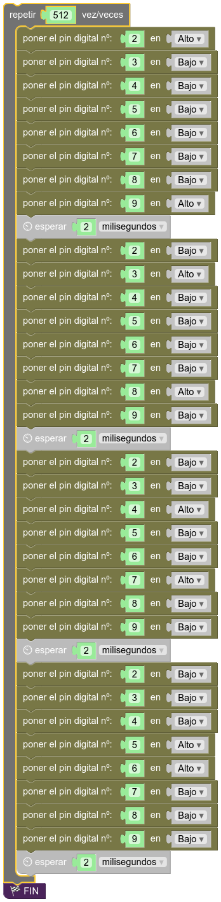
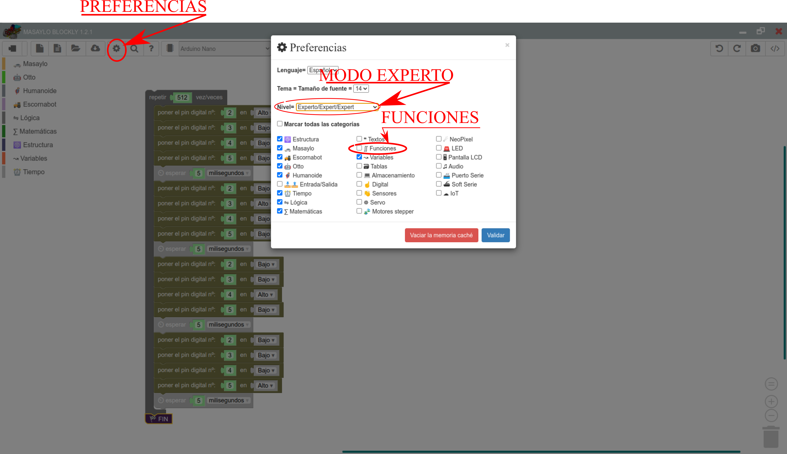
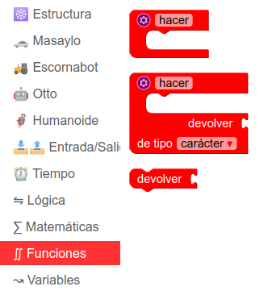
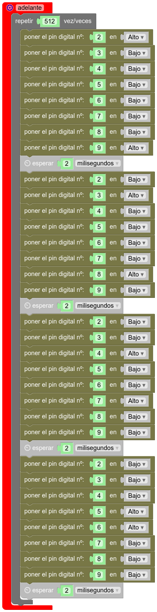
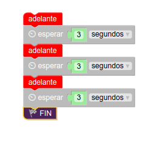

Funciones (II)
Introducción
Si has leído la sección anterior (es lo que uno supondría más lógico, pero cuando hablamos de estudiantes de Educación Secundaria, nunca desecho ninguna hipótesis), habrás aprendido a crear funciones de modo que puedes repetir el código varias veces, tantas como te limites a llamar a cada función por su nombre. No obstante, también hemos explicado que con ese enfoque, cada vez que llamemos a la función adelante, por ejemplo, Rupertobot siempre avanzará exactamente la misma distancia: 3,14 multiplicado por 72, es decir, 226,19 mm (más o menos). Esto es así porque tal y como hemos construido la función, ésta siempre se va a ejecutar exactamente del mismo modo, tal y como la hemos escrito. Lo ideal, ahora, sería que pudiéramos introducir un valor que permitiera a adelante repetir el bucle de su interior un número de veces variable, según la distancia que queramos avanzar. Para ello, pasamos a explicar cómo usar parámetros con nuestras funciones.
Justificación matemática
Lo que queremos hacer es usar funciones paramétricas en las que indiquemos en los casos de adelante y atras, cuántos centímetros queremos movernos, y en el de izquierda y derecha, cuántos grados queremos girar. Tiremos, entonces, de nuestros conocimientos de geometría:
La función adelante original genera un total de 2048 pasos hacia adelante, lo que corresponde a una revolución completa en ambas ruedas del Rupertobot. Como el diámetro de dichas ruedas es alrededor de unos 72 mm (puede subir hasta 75 o incluso un poco más, según el grosor de las juntas tóricas), conociendo la fórmula de la longitud de una circunferencia, sabemos que eso equivaldría a un avance de 226.19 mm, o mejor, 22.619 cm. Quédate con el dato: 2048 pasos->22.62 cm.
Lo que resta es una regla de tres (que me perdonen los profes de Matemáticas, sé que esto no está bien visto) sencilla: Si 22,62 cm exigen 2048 pasos, entonces avanzar 1 cm exigirá 2048/22.619=90.5415 pasos. Ten en cuenta que el algoritmo inicial de adelante aplica 4 pasos a cada repetición, así que 90,5415/4=22.6354. Ése es el número de veces que tenemos que repetir este proceso por cada cm que queremos avanzar.
Por otro lado, si has probado la función izquierda o derecha, verás que como hacen avanzar una revolución completa a cada rueda (2048 pasos), haremos que el robot gire sobre su eje 180º. ¿Cuántos pasos necesito avanzar por grado sexagesimal, entonces?. La aritmética es sencilla, de nuevo. La función original, que da 2048 pasos, implica un giro de 180º. Así que un sólo grado corresponderá a 2048/180=11.3778 pasos. Teniendo en cuenta que las funciones originales implican 4 pasos por repetición, el algoritmo original debería repetirse 2.8444 veces por grado sexagesimal. Quédate, pues, con esos dos números: 22.634 y 2.8444

¿Qué es lo que he hecho? He usado un bucle. Como hemos dicho antes, tomaremos como referencia el hecho de que los steppers de nuestro Rupertobot necesitan 2048 pasos para dar una vuelta completa. Si te fijas bien en el primer ejemplo para mover el robot adelante, hay que explicar la secuencia de los 4 pasos al microcontrolador. Por lo tanto, si ese programa estipula 4 pasos, y quiero que de 2048 antes de pararse, pues como 2048/4=512, el bucle deberá repetirse 512 veces.
¿Cómo simplificar la programación? ¡Con funciones!
Bueno, sí... Parece muy largo. La secuencia completa que hemos sugerido en el apartado anterior exigiría un programa cuatro veces más largo que el de la imagen. Así que vamos a explicarte qué es una función: Una función es un conjunto de órdenes asociadas a un nombre que puede aceptar o proporcionar parámetros. ¿Cómo?. ¿Que no te has enterado?. Lo confieso, yo tampoco. Vamos a intentar irlo explicando con ejemplos:
Configurar MasayloBlockly
Si vas a utilizar el programa MasayloBlockly que desarrollamos desde el IES Maestro Juan de Ávila (es algo artesanal, pero en clase nos está resultando muy útil), debes saber que por motivos de espacio, no suelen aparecer en el menú de bloques de la izquierda todas las opciones. Si quieres algún elemento (como es este caso) que no te aparezca, debes pinchar en el símbolo del engranaje (Preferencias), seleccionar la opción Nivel experto, y dentro del abanico de posibilidades, elige Funciones. Asegúrate también de dejar marcada la opción Entrada/Salida, que es la que te permite ir escribiendo unos y ceros en los pines de Arduino 
Mi primera función
Para empezar, vamos a crear una función muy simplificada, sin parámetros, que llamaremos simplemente adelante. Esta función se encargará de lo mismo que hemos hecho antes, es decir, impulsar al Rupertobot hacia adelante hasta que ambas ruedas den una revolución completa. Para ello, elige el bloque Funciones, y selecciona la primera pieza de puzzle, Hacer:

Del programa anterior, quita la pieza Fin (no queremos interrumpir el programa definitivamente), y arrastra el resto dentro de la pieza Hacer (cambia el nombre hacer por adelante):

Si volcaras el programa en el Rupertobot, verías que no hace nada aún. Se queda quieto. Parado. Como muerto. Qué penita da, ¿verdad?. Eso es porque hemos definido una función, pero no la hemos ejecutado aún. Esto es, hemos asociado al nombre adelante un conjunto de órdenes que repetirá 512 veces el proceso de mover las cuatro bobinas de cada uno de los dos stepper. Pero no hemos dado la orden de ejecutar la función. Vamos a resolver esto. Si te fijas, ahora, en el bloque Funciones aparece una nueva pieza, adelante, que puedes ir arrastrando al escritorio principal de la aplicación. Para que veas cómo funciona, vamos a crear el siguiente programa:

Si lo has hecho correctamente, verás que ahora el Rupertobot avanza 3 veces, en una secuencia espaciada cada 3 segundos, una distancia correspondiente a una revolución completa de cada rueda, esto es, para una rueda de unos 72 mm de diámetro, aproximadamente de 3,14*72=226,19 mm. Por supuesto, la idea es que podamos especificar la distancia que queremos que haga o incluso el ángulo que queremos de giro, pero esto será objeto de otra sección en esta web.
Programa tu Arduino
Si quieres ver cómo quedaría la función adelante en la IDE de Arduino, te dejo el código en C++ con esta función y cómo se ejecutaría tres veces, tal y como especificábamos en el primer ejemplo:
void adelante() {
for (int count=0 ; count<512 ; count++) {
digitalWrite(2, HIGH);
digitalWrite(3, LOW);
digitalWrite(4, LOW);
digitalWrite(5, LOW);
digitalWrite(6, LOW);
digitalWrite(7, LOW);
digitalWrite(8, LOW);
digitalWrite(9, HIGH);
delay(2);
digitalWrite(2, LOW);
digitalWrite(3, HIGH);
digitalWrite(4, LOW);
digitalWrite(5, LOW);
digitalWrite(6, LOW);
digitalWrite(7, LOW);
digitalWrite(8, HIGH);
digitalWrite(9, LOW);
delay(2);
digitalWrite(2, LOW);
digitalWrite(3, LOW);
digitalWrite(4, HIGH);
digitalWrite(5, LOW);
digitalWrite(6, LOW);
digitalWrite(7, HIGH);
digitalWrite(8, LOW);
digitalWrite(9, LOW);
delay(2);
digitalWrite(2, LOW);
digitalWrite(3, LOW);
digitalWrite(4, LOW);
digitalWrite(5, HIGH);
digitalWrite(6, HIGH);
digitalWrite(7, LOW);
digitalWrite(8, LOW);
digitalWrite(9, LOW);
delay(2);
}
}
void setup() {
pinMode(2, OUTPUT);
pinMode(3, OUTPUT);
pinMode(4, OUTPUT);
pinMode(5, OUTPUT);
pinMode(6, OUTPUT);
pinMode(7, OUTPUT);
pinMode(8, OUTPUT);
pinMode(9, OUTPUT);
}
void loop(){
adelante();
delay(3000);
adelante();
delay(3000);
adelante();
delay(3000);
while(true);
}
Descarga los programas
Ejemplo de funciones adelante, atrás, izquierda y derecha para MasayloBlockly
Ejemplo de funciones adelante, atrás, izquierda y derecha para la IDE de Arduino